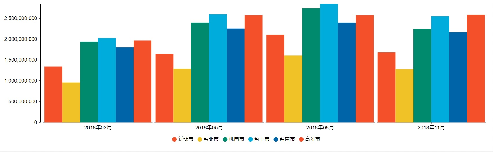
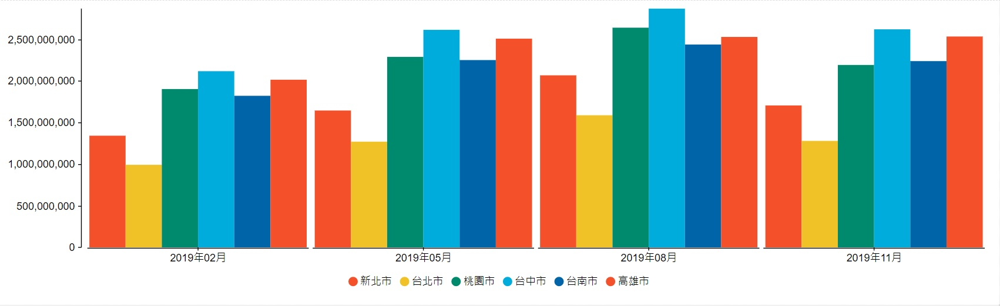
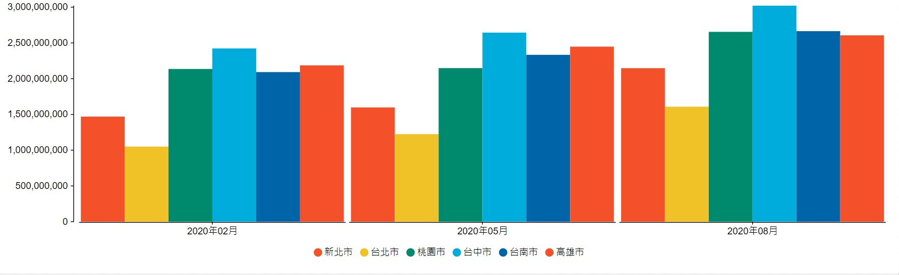
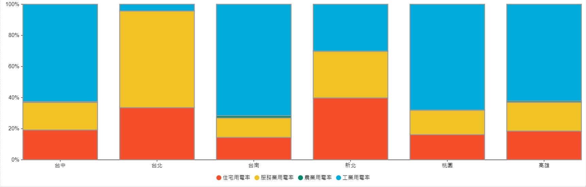
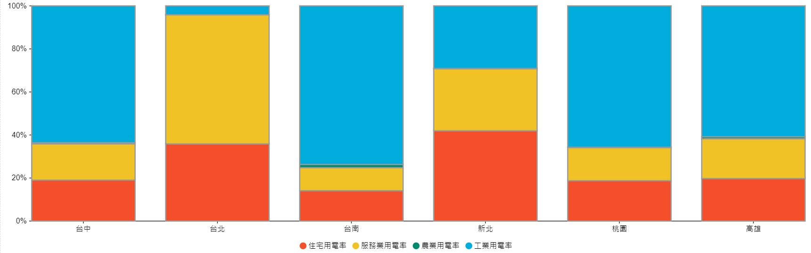

台灣六都近三年用電變化
|
|
|
| S07410346 張旻靖 |
S07410246 何承涵 |
S07410241 王玨 |
| S07410325 熊禹晴 |
S06410208 許僮予 |
|
一、前言
經台灣電力公司統計2020年的用全國用電量由2019年的2187億度飆升到2248億度，六都之中又以台中用電量最大。台灣用電可區分為工業部門、住宅部門、商業服務部門與農林漁牧業4類別，其中工業用電占比超過50%，尤其半導體等電子業是眾所週知的高耗電產業。
二、六都近三年整體用電

2018年
2018年全國的總電量為2191億，六都合計總用電量為1509億，六都之中用電量第一名為臺中市304億，第二名為高雄市295億，第三名為桃園市283億，而用電量最低的則是臺北市156億。

2019年
2019年全國的總電量為2187億，六都合計總用電量為1389億，六都之中用電量第一名為臺中市287億，第二名為高雄市267億，第三名為桃園市254億，而用電量最低的則是臺北市144億。

2020年
2020年全國的總用電量達到了2248億，較去年總用電量多出了61億度電，其中住宅、工業部門各增加約30億度用電，服務業部門則減少約5億度用電。
三、六都整體用電結構

2018產業用電率
2019產業用電率

2020產業用電率
可以看出新北市以住宅部門用電為最多，其次是服務業部門和工業部門。
台北市用電最多是服務業部門，而其次是住宅部門。
桃園用電佔比最高的是工業部門，因為桃園不只有機場，還鄰近台北港和科學園區，是連結北台灣工商業的關鍵點，便利的交通位置，讓許多廠商選擇在桃園設廠，因此市內有超過 30 個工業區，進駐數萬家廠商。
台中用電佔比最高的是工業部門，台中市用電成長與轄區內有中科園區有關，主要是台中市工商建設發展快，帶動用電攀升，加上台商回流等，地方中央拚經濟的效果。
台南用電佔比最高的是工業部門，台積電5奈米進入量產，主要生產基地位於台南科學園區，台積電的5奈米新廠用電量，就超過東台灣56萬人口用電量，而3奈米新廠用電量，更超過台南市188萬人口一年的民生和商業用電，明顯推升台南的工業用電量「大躍進」。
高雄用電佔比最高的是工業部門，以工業及石化產業為主，楠梓工業區、林園石化園區均坐落於此，需要大量用電的產業，也影響高雄用電較其他地區高。
四、結語
由此可見，台灣用電量最多還是來自於工業部門，尤其是半導體行業，因此經濟部也採取《一定契約容量以上之電力用戶應設置再生能源發電設備管理辦法》（用電大戶條款），規範年度平均契約容量達5,000kW以上的用戶，須在五年內獲得契約容量10%的再生能源，否則即須每年繳納至少500萬元的高額代金。希望以此可以降低台灣工業用電量，創造綠色健康的科技園區。